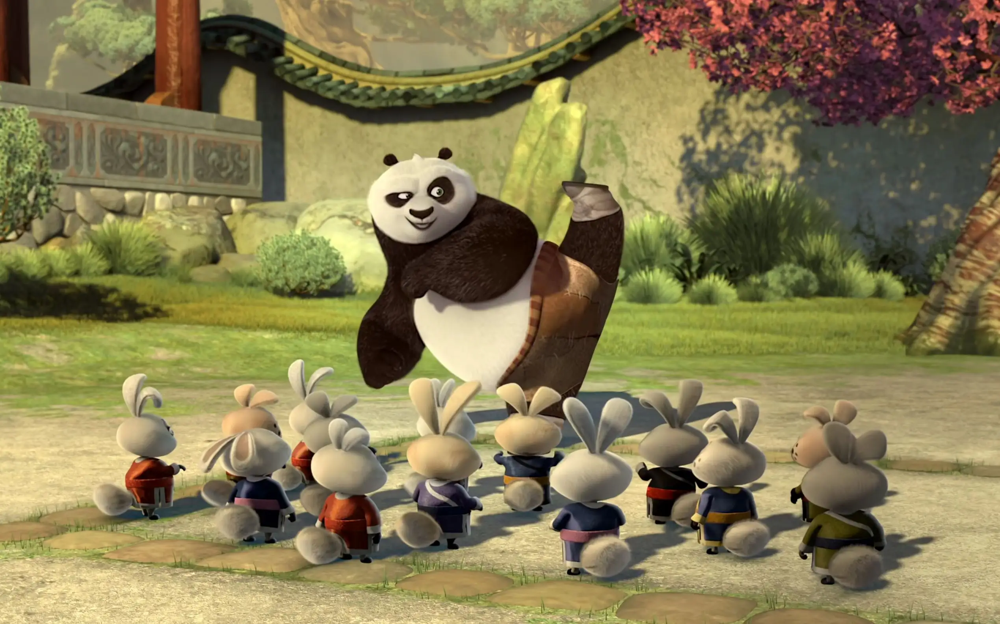

导演: 马克·奥斯本、约翰·斯蒂文森
编剧: 格伦·伯杰、乔纳森·阿贝尔
主演: 杰克·布莱克 / 达斯汀·霍夫曼 / 成龙 / 安吉丽娜·朱莉 / 刘玉玲 / 更多...
类型: 剧情 / 喜剧 / 动画 / 奇幻
制片国家/地区: 美国
语言: 英语 / 普通话
上映日期: 2008-06-20(中国大陆)
片长: 92分钟
故事发生在很久以前的古代中国，而且要从一只喜欢滚来滚去、滚来滚去的大熊猫身上说起。
话说熊猫阿宝是一家面条店的学徒，虽然笨手笨脚，也勉强算是谋到了一份职业。
别看阿宝所在的“和平谷”一派欣欣向荣的安详景象，其实是一个卧虎藏龙的风水宝地，
先不说五大功夫高手皆坐镇于此，更有一大师级别的宗师在这里隐居。
可是在一场特殊的比武大会上胜出的人要代表“和平谷”将邪恶的大龙永久地驱除出去，
啥都不会的阿宝却在经历了一系列阴差阳错之后屏雀中选，让所有人都大跌眼镜。
然而面对众人对他的期待与误解和即将到来的太龙，阿宝将何去何从？